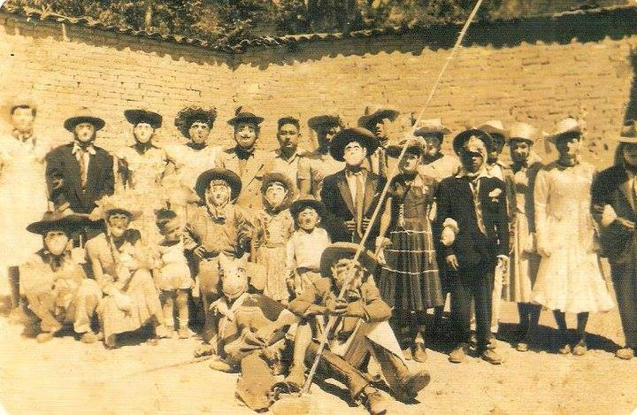
Danza del Macho
Danza del Macho en la década de los 50´. Danza ejecutada en el carnaval de Putla Villa de Guerrero Oaxaca desde 1920 hasta la fecha.
Reseña: Prof. Rodolfo A. Cruz Herrera
El nombre original de la población proviene del náhuatl Puctitlán o Poctlan, derivado de las raíces poctli (humo) o poch (neblina), y tla / tlan (sufijo de abundancia o lugar). Por lo tanto, su significado oficial es "Lugar donde hay mucho humo" o "Lugar de neblina". En la lengua mixteca (Tu'un Savi), la región se conoce históricamente como Ñuu Ñuma (Pueblo de Humo) o 大Ñuu Kaa (Pueblo de Neblina). El apellido "de Guerrero" se le otorgó posteriormente por decreto en honor al insurgente y expresidente de México, el general Vicente Guerrero.
Desde tiempos prehispánicos y la época colonial, este territorio ha funcionado como un punto comercial y estratégico crucial, sirviendo de puente natural entre las frías montañas de la Mixteca Alta y las cálidas tierras de la Costa Oaxaqueña. Esto propició un intercambio cultural único que aún se respira en sus calles.

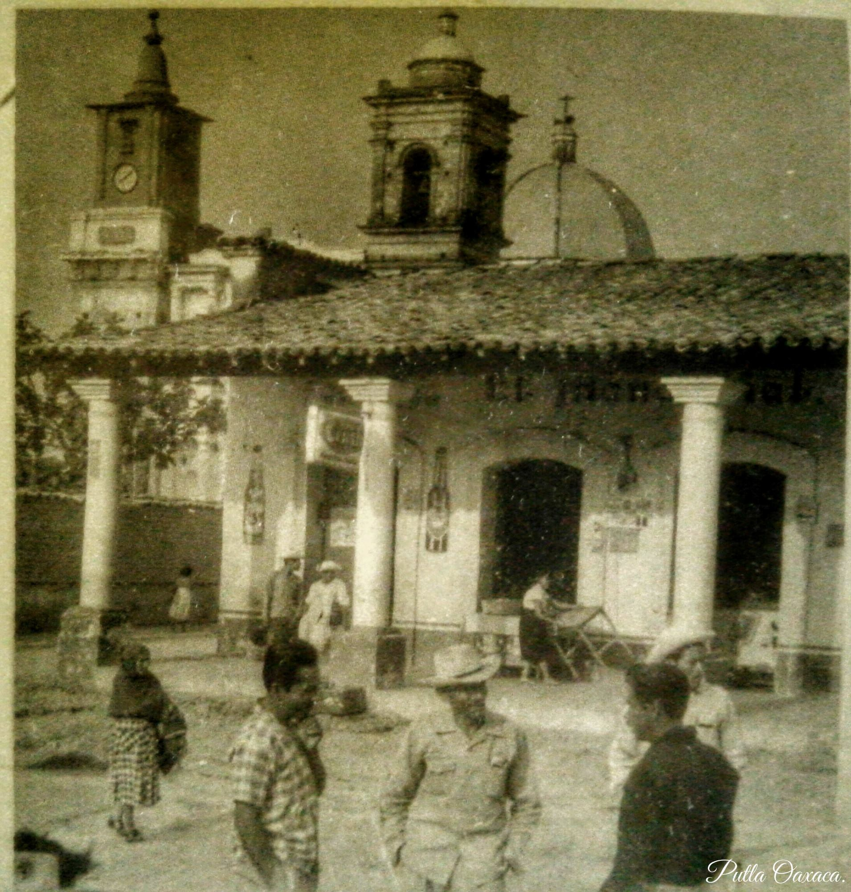

De acuerdo con las memorias geográficas del estado y la cronología local, la población actual de Putla no siempre estuvo en el valle. Su fundación pasó por tres etapas o asentamientos principales debido a factores climáticos y epidemiológicos:
Primer Asentamiento (Época Prehispánica): El origen de la civilización local se sitúa en los llanos de lo que hoy es la agencia de San Juan Lagunas. En este punto, gobernado antes de la llegada de los españoles por el líder mixteco Cusiviza (hacia 1519), existía un centro ceremonial con adoratorios y pirámides. Era una zona clave para el trueque y comercio entre la Costa y la Mixteca Alta.
Segundo Asentamiento (Época Colonial): Con la llegada de los colonizadores españoles, se introdujeron enfermedades infecciosas que mermaron a la población de las zonas bajas y lacustres. Por consejo de sus médicos tradicionales y curanderos, los sobrevivientes emigraron hacia tierras más altas buscando un clima más sano. Se establecieron temporalmente en la zona alta que hoy ocupa el Panteón Municipal (hacia finales del siglo XVI y el año 1582).
Tercer Asentamiento (El Putla Actual): A principios del siglo XIX, con la llegada de las Leyes de Indias y la posterior repartición de tierras, las familias y los grupos mestizos comenzaron a descender y poblar formalmente el fértil valle regado por los ríos de la zona (como el Copala y La Purificación), consolidando la actual cabecera municipal.

Danza del Macho en la década de los 50´. Danza ejecutada en el carnaval de Putla Villa de Guerrero Oaxaca desde 1920 hasta la fecha.
Reseña: Prof. Rodolfo A. Cruz Herrera

Calle Morelos 1957 donde ahora son las gradas que van rumbo al panteón.

Calle Coahuila en la década de los 50.
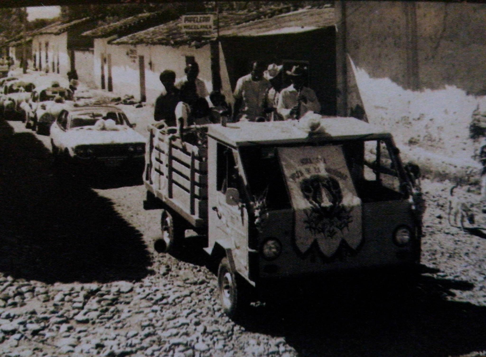
Paseo de carros presidida por el padre Jesús Miranda 1966
Archivo fotográfico: Sra. Irma Miranda

Celebración del 16 de septiembre 1939
Archivo Fotográfico: Doc. David Avalos
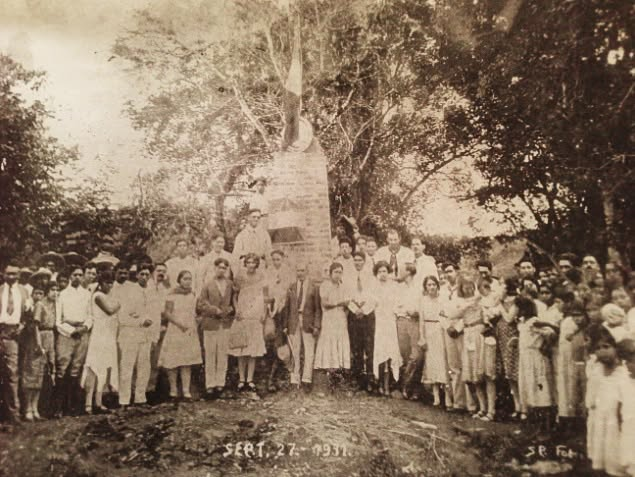
Monumento derigido a la memoria de Don Gregorio Álvarez a un costado del antiguo camino real de Putla-Tlaxiaco, en el paraje conocido como “Los Amates”. .
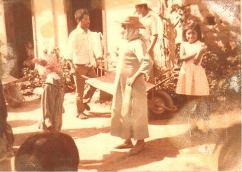
Amado Castro Hernández Bailando la Danza Del Macho el los 80s y ahora su bisnieto sigue esta hermosa tracción
Archivo Fotográfico: Ignacio Aguirre.
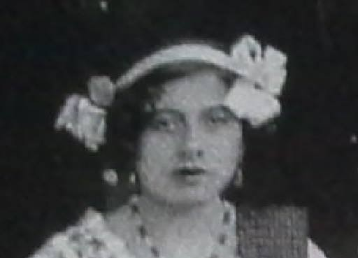
Srita. Guillermina Olivera Una de cinco señoritas Originarias de Putla que representaron a la delegación Costa en el Homenaje Racial (Guelaguetza). Oaxaca de Juárez Oax., 18 de diciembre de 1933.
Fuente: Prof. Rodolfo A. Cruz Herrera.
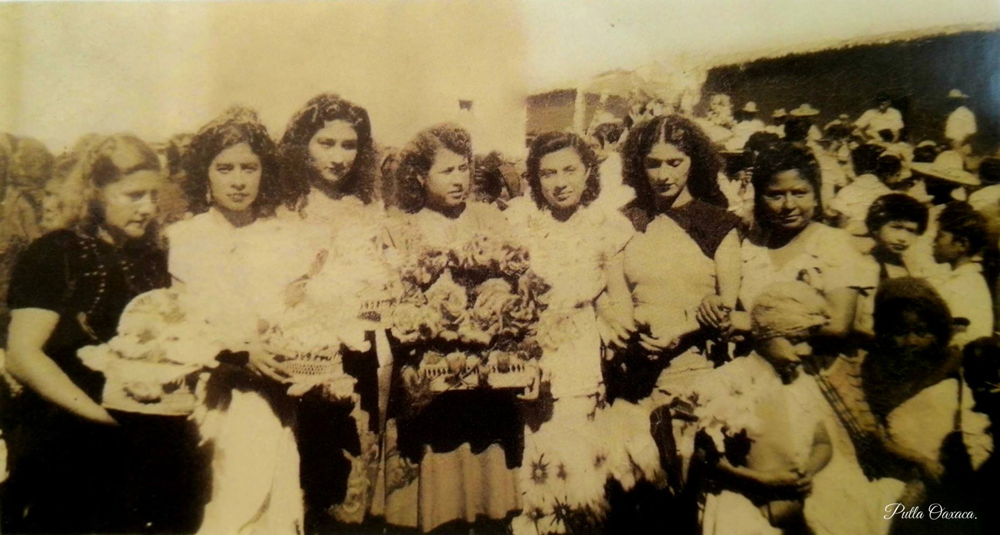
Calenda en los 40s (de izquierda a derecha) Teresa Manzano, Irene Terrones, Josefina Vásquez, Cristina Vigil, Gloria Martell, Enriqueta García Sandoval, Baudelina Cruz.
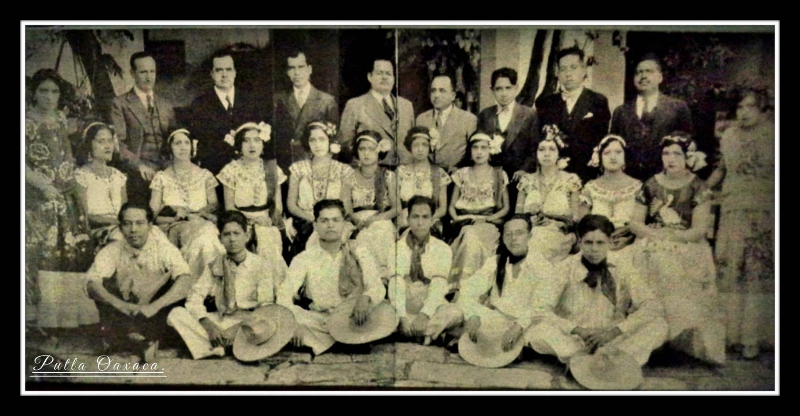
Delegación costeña integrada por personas de la región, homenaje racial (Guelaguetza), que tuvo lugar en el cerro del Fortín. También aparecen en esta foto luciendo sus vistosos trajes algunas señoritas uniformadas con la típica vestimenta tehuana, así como algunos señores cuya procedencia es costeña.
Fuente: Prof. Rodolfo A. Cruz Herrera, CP. Ángel Álvarez Sánchez.
Calle Aguascalientes en 1950
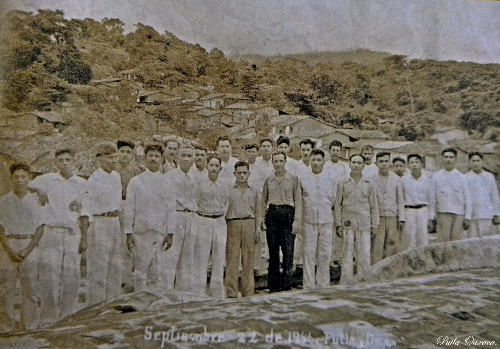
Comité Pro-Reconstrucción del templo católico Septiembre 22 de 1946, Putla Oaxaca.
Fotografía y Datos: CP. Ángel Álvarez Sánchez.
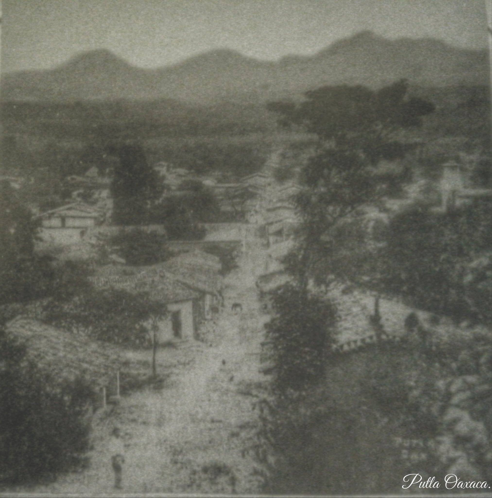
Calle Coahuila, Putla Oaxaca. en la década de los 30s
Archivo fotográfico: CP. Ángel Álvarez Sánchez

Daba inicio la segunda década del siglo XX y con ello surgió el grupo de los llamados “Marmanos”, ahora conocidos como los “Viejos”.
Fuente: Prof. Rodolfo A. Cruz Herrera

Domingo de Ramos Marzo 30 de 1947. Recuerdo del Mayordomo Leoncio Ramos. Putla Villa De Guerrero, Oaxaca

Calle Morelos, Putla Oaxaca 1950.
Fotografía: CP. Ángel Álvarez Sánchez
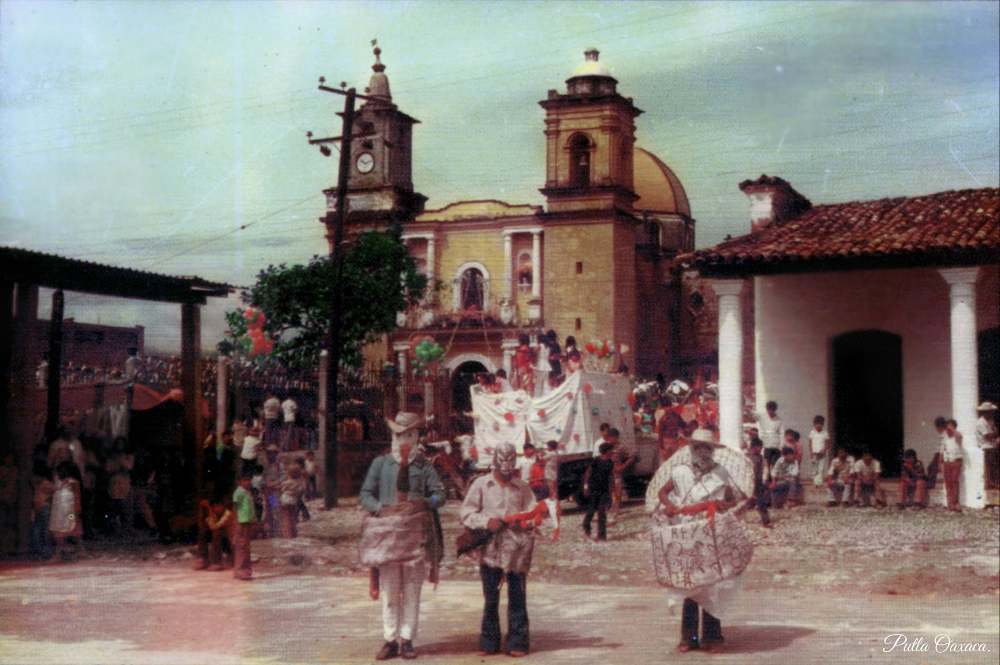
Un Día de Calenda en Honor a la Virgen Natividad de María en la década de los 70s en Putla Oaxaca. La Fiesta Patronal de Putla son los días 6, 7 y 8 de Septiembre
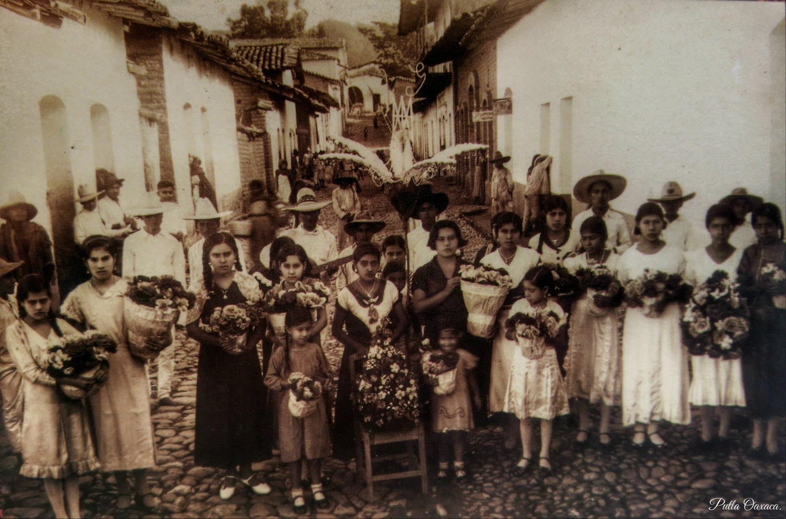
Madrinas de Calenda sobre la Calle Puebla en la década de los 40.

Celebración del Carnaval Pultleco en la década de los 40
Cortesía: ROJO LATIDO, Revista N° 15 Edición Diseño e Impresión Ana Sánchez Figueroa.

Antiguo Mercado Benito Juárez de Putla en los 40s.
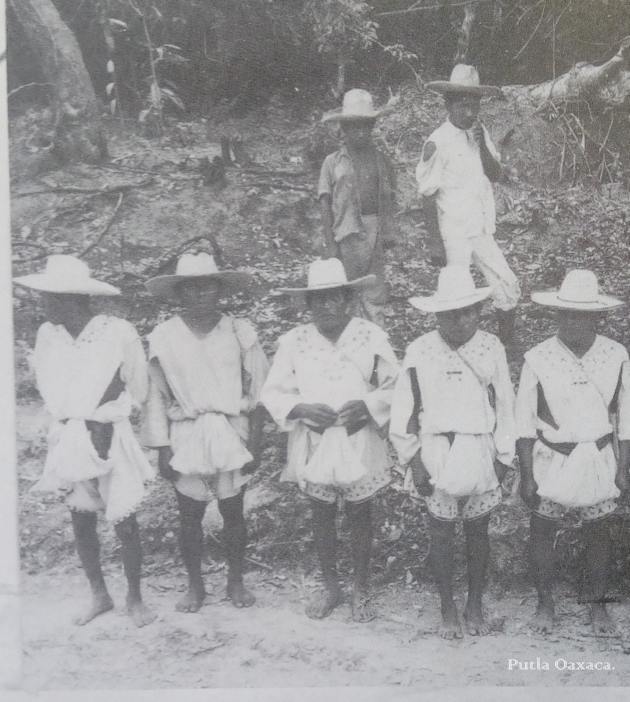
Autoridad y Principales Tacuates de Santa María Zacatepec en la inauguración de la caja de agua en el barrio La Asunción Putla Villa Guerrero Hacia 1950
Fotografía: Ángel Álvarez Sánchez.